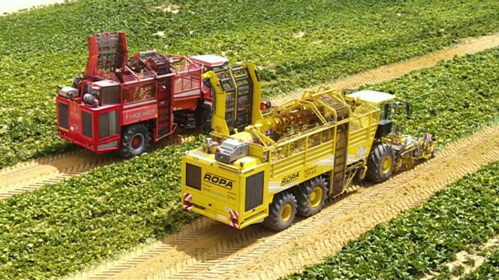
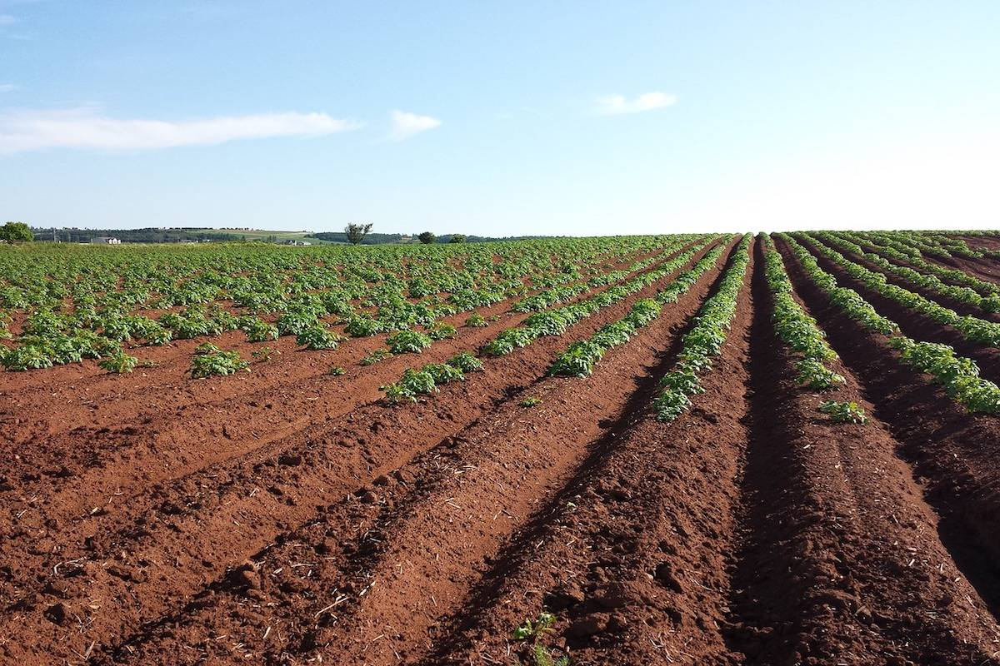
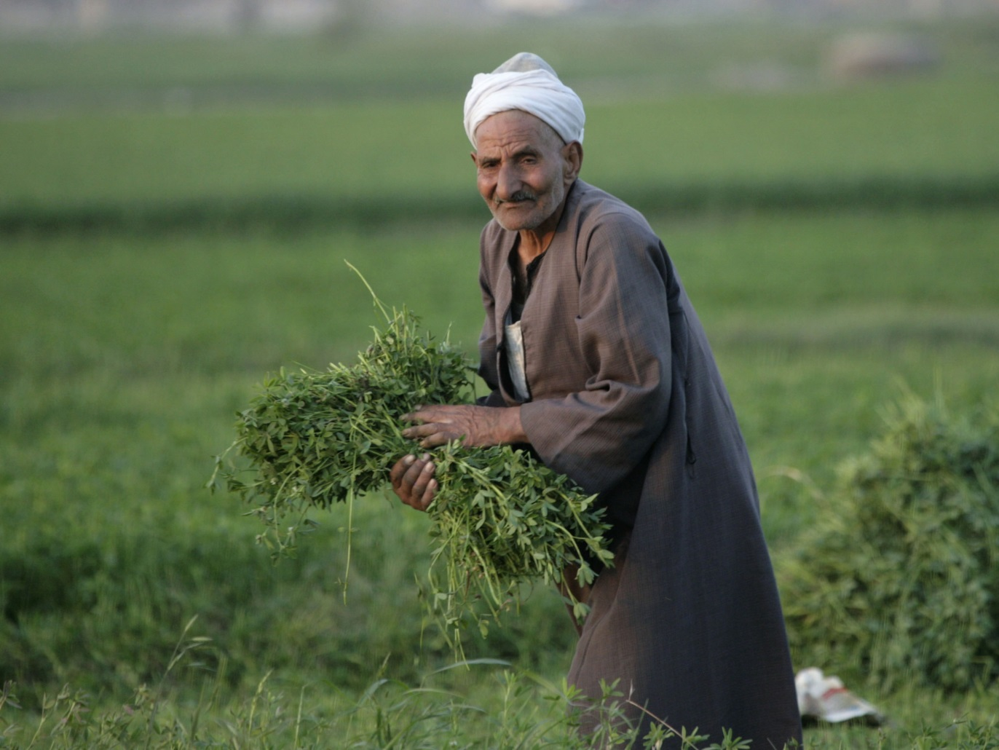
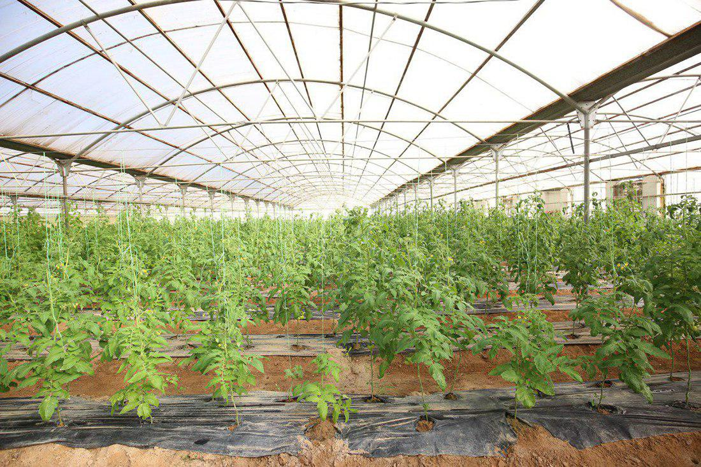
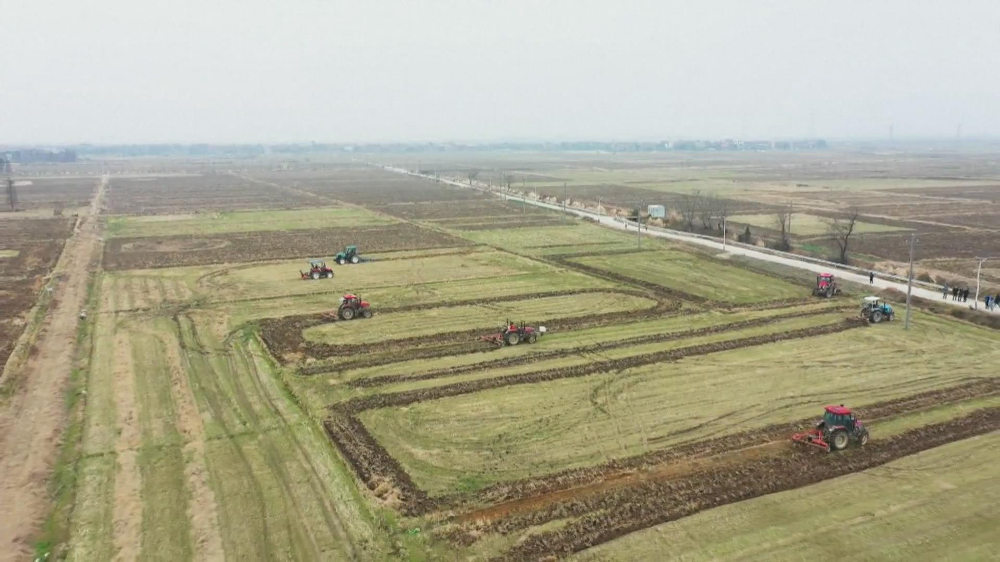

The project arose in the framework of addressing the problems affecting the agricultural area by working on Increasing it by 20%, as the lands allocated for the project were distributed across the country; In order to reduce The food gap and the increase of the inhabited land area through the construction of residential communities equipped with the latest Technologies around agricultural areas This project is considered the first critical steps towards the future of “development”. sustainable” and is an integral part of the economic reform system. The 1.5 million acres project constitutes an addition to the field of cluster development related to mobilization and industry Food and beverages, next to the agricultural development, which represents the backbone of the project. The project is also characterized by its objective To create residential communities to attract foreign investors and local workers, and educational services are provided and medical in the vicinity of those areas.
In eight governorates: Aswan, Minya, Matrouh, New Valley, Qena and Ismailia Giza and South Sinai”; they were selected based on their proximity to the national road network and urban areas And lines of communication between the governorates in order to speed up the construction of urban areas and provide all of the infrastructure and services in those areas.
The project was divided into 3 phases:
- Phase 1: The first phase includes 9 areas irrigated with groundwater with a total area of 500,000 acres: Old Farafra (30 thousand acres) New Farafra (20 thousand acres) Maghra area (135 thousand acres) Dakhla Extension (20 thousand acres) While there are surface irrigated areas; It is divided as follows: Al-Amal Village (3.5 thousand acres) Toshka (143 thousand acres) West Al Marashda area (25.5 thousand feddans plus another 18 thousand feddans in the same area) Finally, in the phase, there are 25,000 feddans irrigated with wells and 80,000 feddans irrigated with groundwater, in addition to the presence of Areas to be cultivated by strategic crops.
The second phase also includes 9 areas with an area of 490,000 feddans that are irrigated with groundwater: Old Farafra area (120,000 feddans) New Farafra area (20 thousand acres) New Farafra (20 thousand acres) West Kom Ombo (25 thousand acres) Ochrah (35 thousand acres) West Minya (140,000 acres) East Siwa (30 thousand acres) Southeast of the Low (90 thousand acres)
The third stage: It includes 5 areas irrigated by groundwater, extending to an area of 510 thousand feddans and divided as follows: Old Farafra (40 thousand acres) Al-Tur area in South Sinai (20 thousand acres) Extension of the southeast of the depression (50 thousand acres) West Minya (250,000 acres) West “2” area (150,000 feddans)
1- Increasing the agricultural area to 9.5 million acres instead of 8 million acres, i.e. by 20% 2- Restructuring the Egyptian countryside so that its nucleus will be a group of model villages that address the problems of the past and draw more pictures clear for the future. 3- Expanding the urban space to accommodate the natural increase in population growth by establishing urban communities Integrated and modern. 4- Maximum utilization of Egypt's groundwater resources. 5- Cultivation of crops that help bridge the food gap and that generate a huge financial return for the country. 6- Increasing Egypt's exports of agricultural crops to reach 10 million tons per year. 7- Establishing industries related to agricultural activity, livestock and food industries 8- Empowering youth by creating job opportunities, as the One and a Half Million Feddan Project provides more than 25 thousand job opportunities. 9- Advanced studies are also being carried out in order to cultivate strategic crops such as wheat and corn, and other export ones such as Peanuts and peas.
- The water resource represented by groundwater Solar energy as a clean renewable resource for electricity generation • Responsible for project management: The “New Egyptian Countryside” company, which is one of the holding projects, the company’s capital reaches 8 billion pounds, and it will be Under the laws of the Investment Authority
